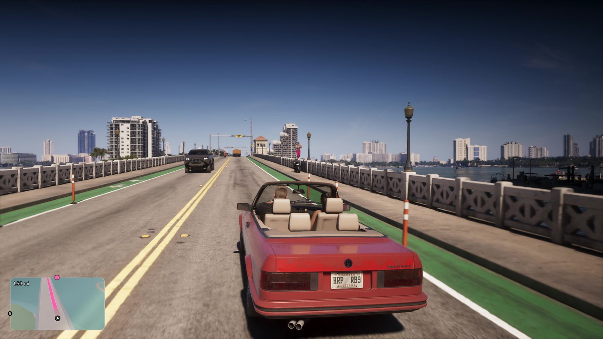
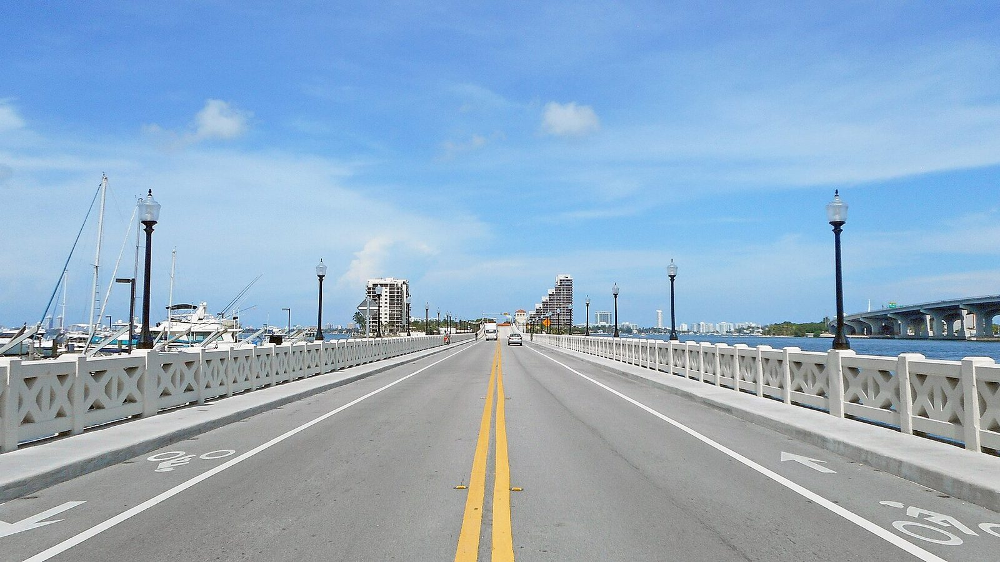
⟷
ИграРеальностьИгра: Джейсон едет по мосту-дамбе: балюстрады, фонари, велодорожкиРеальность: Venetian Causeway со стороны Майами: перила, фонари и велополосы
Сравнение дня: Мост-дамба Вайс-Сити и Venetian Causeway · 1 октября 2026 →GTA 6 и реальная жизнь
Что Rockstar взяла из реальности?
Места, машины, персонажи и бренды GTA 6 рядом с реальными фото. У каждого сравнения — вердикт: скопировано, по мотивам, пародия или придумано.
До выхода GTA 6 — – дн. 19 ноября проверим всё в игре.
Угадай вердикт
Угадано 0 из 0Что Rockstar сделала с реальностью? Сравните кадр игры с реальным фото и выберите ответ.
Вердикты
Скопированопочти 1:1 с реальностью
По мотивамузнаваемо, но переделано
Пародиястёб над реальным брендом или явлением
Придуманоаналога в реальности нет
Разделы
МестаГорода, районы, дороги и пляжи Леониды и их прототипы5 сравн.
МашиныАвтомобили, мотоциклы, лодки и авиация2 сравн.
ПерсонажиГерои игры и их реальные прототипы3 сравн.
БрендыМагазины, реклама, вывески и знаки3 сравн.
КультураМузыка, радио, вирусные ролики и реальные события5 сравн.
ПриродаЖивотные, погода и болота4 сравн.
Об игреДата выхода, цены, покупка в России, русский язык, ПК11 стат.
РегионыВайс-Сити, Кис, болота и ещё 3 региона Леониды6 регионов
Все сравнения
Раздел
Регион
Вердикт

 vs
vsСкопированоМост-дамба Вайс-Сити и Venetian CausewayМеста · Вайс-Сити
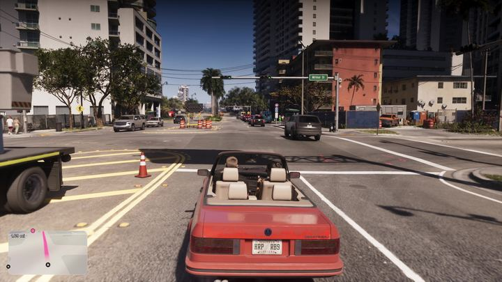
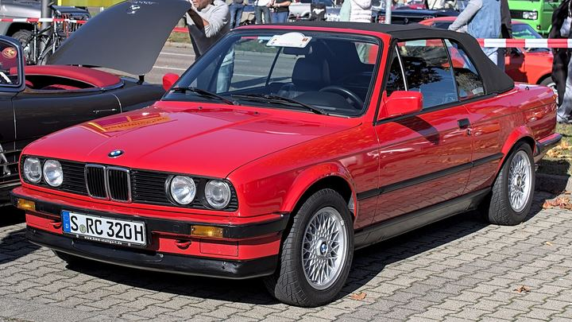
vsПо мотивамКрасный кабриолет Джейсона и BMW 3 серии E30Машины · Вайс-Сити
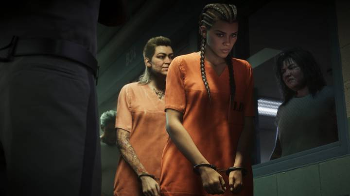
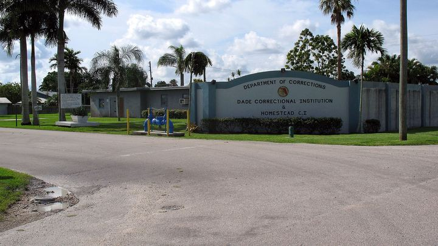
vsПо мотивамЛусия и женские тюрьмы ФлоридыПерсонажи · Вся Леонида

 vs
vsПародияДжерси «Manatees» и «Майами Долфинс»Бренды · Вайс-Сити
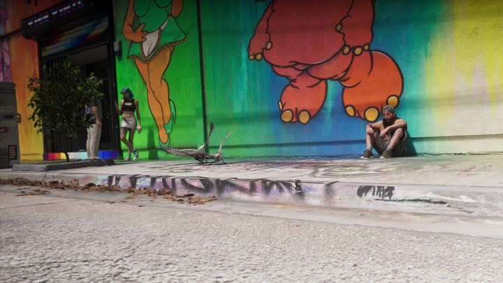
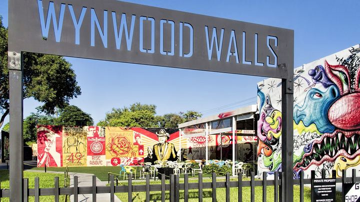
vsПо мотивамМуралы Вайс-Сити и район Винвуд в МайамиКультура · Вайс-Сити

 vs
vsСкопированоСамолёты с баннерами над пляжами ФлоридыКультура · Вайс-Сити
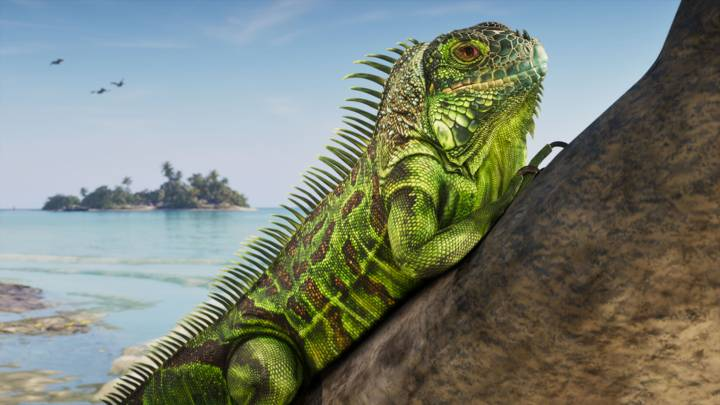
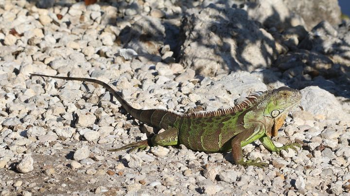
vsСкопированоЗелёная игуана Леониды и игуаны ФлоридыПрирода · Leonida Keys
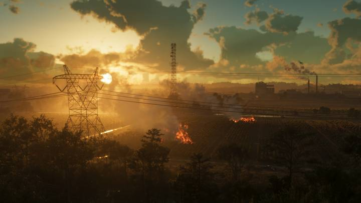
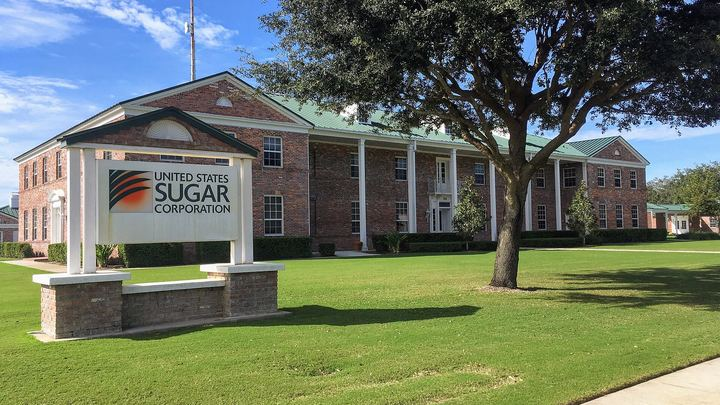
vsПо мотивамАмброзия и Клюистон — «самый сладкий город Америки»Места · Амброзия

 vs
vsПо мотивамAllied Crystal и сахарные гиганты ФлоридыБренды · Амброзия

 vs
vsПо мотивамБайкеры Амброзии и Байк-неделя ДейтоныКультура · Амброзия
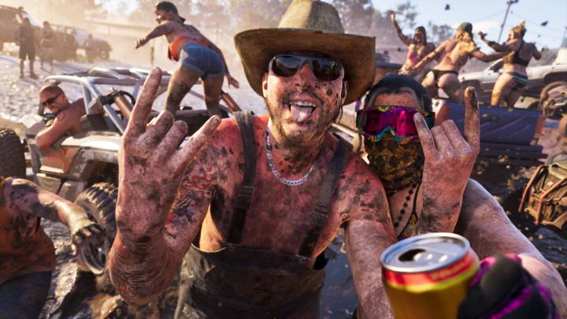
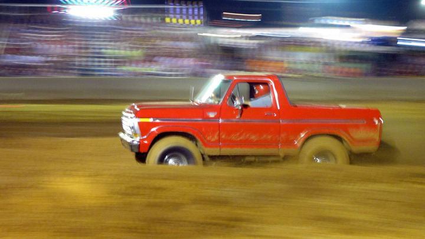
vsПо мотивамГрязевая вечеринка и мад-парки ФлоридыКультура · Амброзия

 vs
vsСкопированоОранжевые жилеты охотниковКультура · Mount Kalaga

 vs
vsПо мотивамMount Kalaga и леса ФлоридыПрирода · Mount Kalaga

 vs
vsПо мотивамОлени Леониды и белохвостый оленьПрирода · Mount Kalaga

 vs
vsПо мотивамБрайан Хедер и контрабандисты Флорида-КисПерсонажи · Leonida Keys

 vs
vsПо мотивамВайс-Сити и МайамиМеста · Вайс-Сити

 vs
vsПо мотивамLeonida Keys и Флорида-КисМеста · Leonida Keys

 vs
vsПо мотивамPort Gellhorn и «Забытое побережье» ФлоридыМеста · Port Gellhorn

 vs
vsПо мотивамGrassrivers и ЭверглейдсПрирода · Grassrivers

 vs
vsСкопированоАэроглиссерМашины · Grassrivers

 vs
vsПо мотивамДжейсон и Лусия — Бонни и Клайд?Персонажи · Вся Леонида

 vs
vsСкопированоНомер трассы в контуре штатаБренды · Port Gellhorn
По этим фильтрам пока ничего нет — сравнения выходят каждый день.